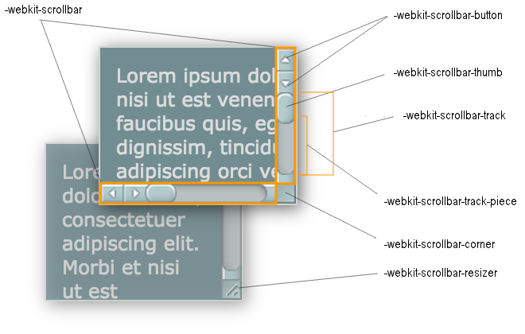

- ::-webkit-scrollbar：整个滚动条
- ::-webkit-scrollbar-button：滚动条上的按钮（下下箭头）
- ::-webkit-scrollbar-thumb：滚动条上的滚动滑块
- ::-webkit-scrollbar-track：滚动条轨道
- ::-webkit-scrollbar-track-piece：滚动条没有滑块的轨道部分
- ::-webkit-scrollbar-corner：当同时有垂直和水平滚动条时交汇的部分
- ::-webkit-resizer：某些元素的交汇部分的部分样式（类似textarea的可拖动按钮）